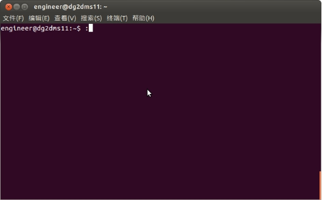
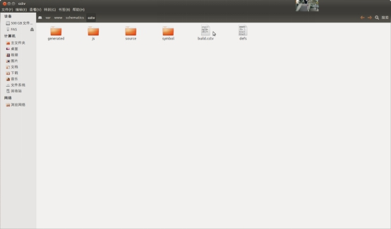
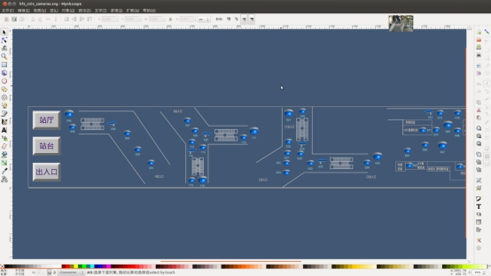
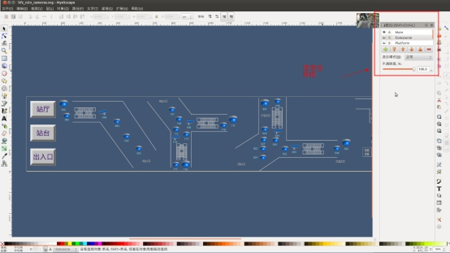
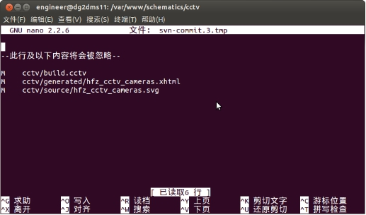
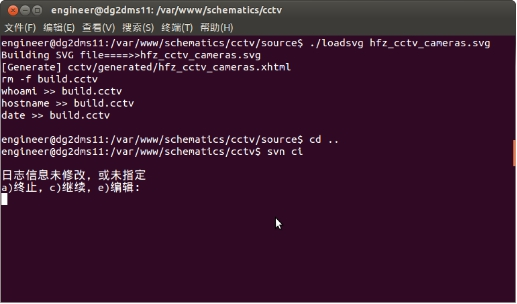

在将故障点定义为综合监控界面图元显示的时候我们可以在任意一台工作站上对图元进行修改，包括设备编号（不含点击设备图元之后设备详情选项卡内的描述）及位置。
2.1在修改图元前应注意SVN版本库对应版本号，提前更新版本库到本地；
2.2修改图元等信息，应遵循设计-现场-点表（ISCS-BAS）-数据库多方统一方可进行修改。
4.1在任意一台工作站上使用Ctrl+T打开shell界面，如图1

4.2更新本地工作站上的版本库：输入指令如下
$svn up /var/www
执行结果如下：
U /var/www/schematics/cctv/build.cctv
U /var/www/schematics/cctv/generated/hfz_cctv_cameras.xhtml
U /var/www/schematics/cctv/source/hfz_cctv_cameras.svg
版本 141
此为完成本地版本库的更新
4.3使用cd命令进入对应的图元存放地，此处以cctv图元为例：
在命令行输入$cd /var/www/schematics/cctv/source/
然后使用”nautilus .”命令打开视窗如图2（注意：后面有个符号”.”）

双击你所要修改的图元文件，打开编辑界面，如图3；

（注：如果此图元文件为多图层文件时，需选择对应的图层进行修改。在mynkscape的菜单栏中选中”层”->“层”，将会出现如图4中的侧边栏。）
点选图层名称左侧的类似眼睛一样的图标将会显示不同的图层。（注意：main图层必须处于显示状态）
修改完毕后保存关闭文件。
4.4返回shell界面
①输入：svn st （查看修改图层名字）
②对图元进行编译（须在被修改的图元同级目录下）：./loadsvg hfz_cctv_cameras.svg。其中红色字体为所修改的图元文件名。
执行后会显示类似如下的样式：
engineer@dg2dms11:/var/www/schematics/cctv/source$ ./loadsvg hfz_cctv_cameras.svg
Building SVG file====>>hfz_cctv_cameras.svg
[Generate] cctv/generated/hfz_cctv_cameras.xhtml
rm -f build.cctv
whoami >> build.cctv
hostname >> build.cctv
date >> build.cctv
4.5使用cd ..命令返回上级目录，使用svn ci命令查看所需更新的版本库文件，如图5

查看是否为对应修改的图元，确认无误后按住Ctrl+X会出现图6的界面
然后输入字符c，然后回车。
界面会输入如下字符：
正在发送 cctv/build.cctv
正在发送 cctv/generated/hfz_cctv_cameras.xhtml
正在发送 cctv/source/hfz_cctv_cameras.svg
传输文件数据 ...
提交后的版本为 142。
当出现版本号后，即为提交成功
4.6登录对应车站及中心服务器，使用svn up /var/www命令更新服务器上的文件。执行成功后会输入如下字符：
engineer@dg2socc01:~$ svn up /var/www
正在升级 '/var/www':
U /var/www/schematics/cctv/build.cctv
U /var/www/schematics/cctv/generated/hfz_cctv_cameras.xhtml
U /var/www/schematics/cctv/source/hfz_cctv_cameras.svg
更新到版本 142。
其中版本号应和你提交给版本库的版本号保持一致。